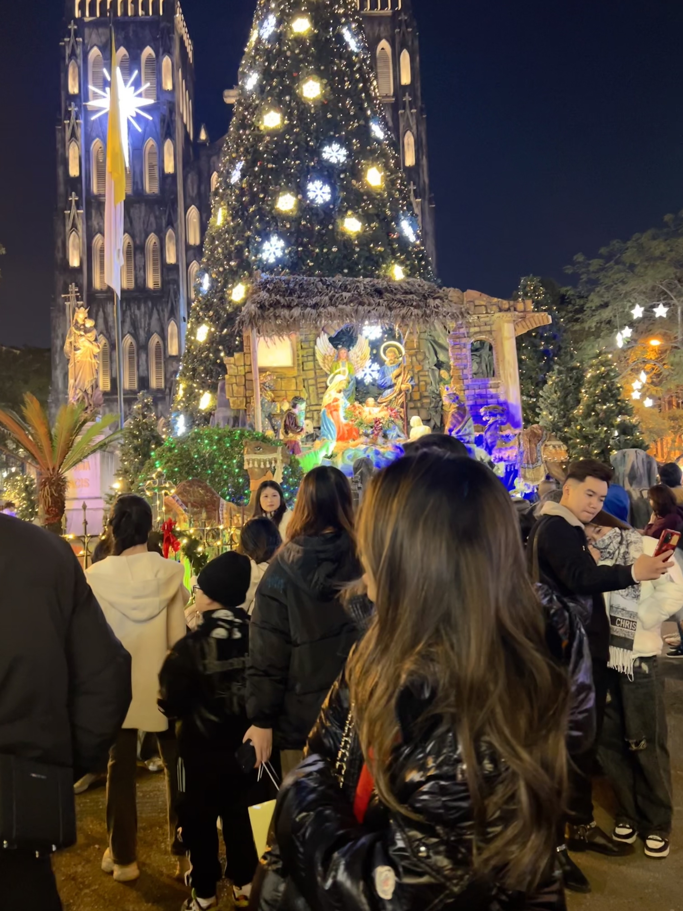
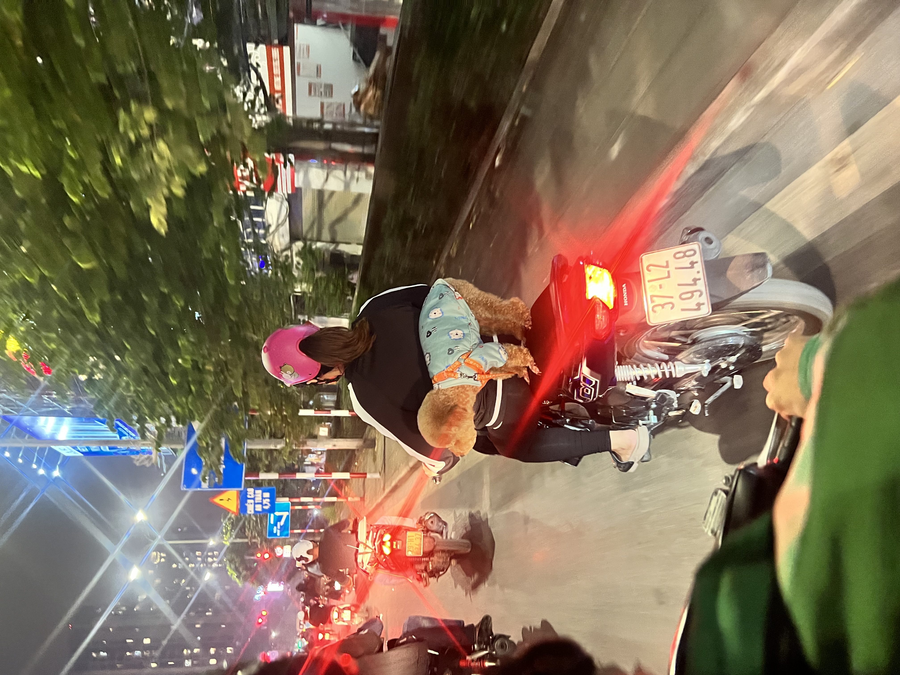

Hanoi Travel Guide
Hanoi is chaotic, humid, and completely captivating. The Old Quarter streets are packed with motorbikes, street food vendors, and endless energy. It's overwhelming at first, but once you settle into the rhythm, the city reveals itself.
I love Hanoi for its contradictions—ancient temples next to modern cafes, quiet lakes in the middle of traffic chaos, and some of the best food in Southeast Asia served from tiny plastic stools on sidewalks. The city moves fast, but life here still happens on the street. Give yourself at least 3-4 days to explore properly.
Where to Stay in Hanoi
Most travelers stay in the Old Quarter, which makes sense for a first visit. You're walking distance to everything, but it's loud and crowded.
Old Quarter – the tourist hub with narrow streets, endless shops, and constant motorbike traffic. Stay here if you want to be in the center of everything. Book a room on higher floors away from the street for better sleep.
Hoan Kiem Lake area – slightly quieter than the Old Quarter but still central. Good balance of convenience and calm. This is where I usually stay.
French Quarter – wider tree-lined streets with colonial architecture. More upscale hotels and restaurants. Quieter but still walkable to main sights.
Tay Ho (West Lake) – where expats live. Much quieter with cafes, boutiques, and restaurants that cater to foreigners. You'll need taxis or a scooter to get downtown, but it's a nice escape from the chaos.
Budget tip – guesthouses in the Old Quarter start around $15-20 per night. Mid-range hotels with rooftop bars cost $40-60.


Where to Eat
Hanoi's food scene is the main reason to visit. Street food here is exceptional and incredibly cheap. Don't be afraid to eat where locals eat—look for busy stalls with high turnover.
Must-try dishes – bun cha (grilled pork with noodles), pho (get it for breakfast), bun rieu (crab noodle soup), banh mi, egg coffee, and bia hoi (fresh beer).
Street food – the best meals cost $1-3 on plastic stools. Pho Gia Truyen for pho, Bun Cha Dac Kim for bun cha, Banh Mi 25 for sandwiches. Go early before they sell out.
Pizza 4P's – I know, pizza in Vietnam sounds wrong. But this place is genuinely excellent. The burrata is made in-house and the truffle pizza is worth the splurge. Book ahead.
Cafes – Hanoi's cafe culture is serious. Try egg coffee at Cafe Giang (the original) or coconut coffee at Cong Caphe. Loading T Cafe has great views of the cathedral.
Fine dining – if you want something upscale, Madame Hien and Cha Ca Thang Long serve traditional Vietnamese in nicer settings.

What to Do
Walk the Old Quarter – each street traditionally specialized in one trade, and some still do. It's crowded and chaotic but that's the point. Go early morning to see the city wake up, or evening when it's most energetic.
Hoan Kiem Lake – the city's center. Walk around it early morning to see locals doing tai chi. Ngoc Son Temple sits on an island in the lake. Weekends, they close streets around the lake for a night market and street performances.
Temple of Literature – Vietnam's first university, built in 1070. It's peaceful and well-preserved. Good break from street chaos.
Ho Chi Minh Mausoleum – open mornings only. The complex includes his mausoleum, house, and museum. Dress conservatively and expect security checks.
Train Street – residential street where trains pass twice daily. It's been closed to tourists repeatedly, so check current status. Even if you can't access it, the idea that people live inches from active train tracks is wild.
Day trips – Halong Bay is the famous one (book a 2-day cruise if you can afford it). Ninh Binh offers similar scenery with fewer tourists and makes a great day trip. Sapa for mountain trekking is worth 2-3 days.

A Few of My Favorite Spots
- St. Joseph's Cathedral area for cafes and people-watching
- Hoan Kiem Lake at sunrise before crowds arrive
- Long Bien Bridge for sunset views over the Red River
- Dong Xuan Market for local shopping (not souvenirs)
- Tran Quoc Pagoda on West Lake at golden hour
- Any random street food stall with a line of locals
- Rooftop bars in the Old Quarter for sunset drinks
- Vietnamese Women's Museum for cultural context
Practical Information
Transportation – use Grab (Southeast Asia's Uber) for cars and motorbikes. Always use the app, never negotiate with street taxis. Motorbike rides are cheap and fast. Walking is fine for Old Quarter and Hoan Kiem area.
Money – Vietnam uses dong (VND). ATMs are everywhere. $30-40 per day covers budget travel including food, accommodation, and transport. Bring some USD for tours and visa on arrival.
Best time to visit – October to December offers the best weather—dry and cooler. March to April is also good. Avoid June to September (hot and rainy) and Tet (Lunar New Year, usually late January to February when everything closes).
Crossing streets – walk at a steady pace and let motorbikes flow around you. Don't stop suddenly or run. It's terrifying at first but works.
Language – English is limited outside tourist areas. Download Google Translate. Learn basic phrases but don't expect much English from street food vendors.
Safety – Hanoi is generally safe. Watch for bag snatching on motorbikes. Don't leave valuables visible in cafes. Be firm with street vendors and cyclo drivers—they can be pushy.
Visas – many nationalities can get visa on arrival or e-visa for 30-90 days. Check current requirements for your passport.